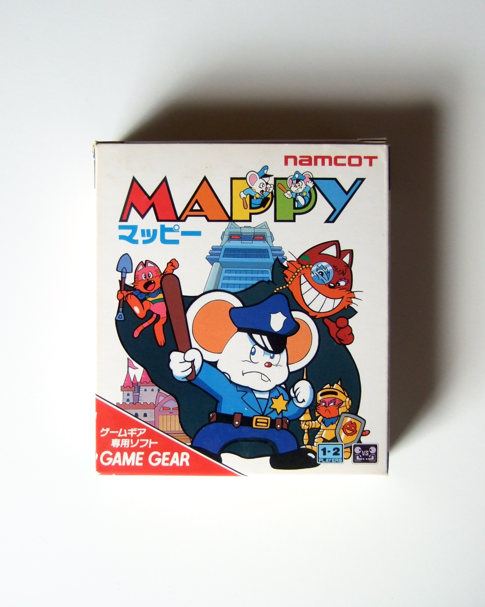

Usage

Mappy arcade game logo
Minos Hits (1974) album art
Thoroughly Modern Millie album art
How To Decorate Your Home
Art Deco of the 20s and 30s

Last Sessions album art
The history of the Broadway font dates back to 1928 when it was first introduced to the public by the American Type Founder. This sans-serif font quickly gained widespread acceptance, becoming a favorite among many. Its initial release only included uppercase letters, but in 1929, Monotype, under the design of Sol Hess, introduced the lowercase letters for the font. The same year also saw the release of Broadway condensed, another variant by the American Type Founder. In 1954, the company disassociated itself from the Broadway font, marking a significant development in its history. Despite this disassociation, the font's popularity endured, and it continued to be used to evoke the aesthetic of the 1920s and 1930s, particularly during the Cold Type era when it was rediscovered. A notable variant, Broadway Engraved, was designed by Sol Hess for Monotype, featuring engraved characters. Another variation, LTC Broadway, is recognized as a decorative typeface and often considered an archetypal Art Deco font. Originally designed in 1927 by Morris Fuller Benton for ATF, it initially showcased only uppercase letters. Later, Sol Hess added lowercase letters, and a engraved version was created for Lanston. LTC Broadway has maintained its appeal over the years and has been utilized in various contexts, including in the TV shows Rhoda and My Life as a Teenage Robot. The font's diverse family contains understandable and readable letters, contributing to its enduring popularity and cultural significance.
Morris Fuller Benton (1872-1948) was an American graphic designer and type designer. After training as a mechanic and engineer, Benton went to work for the American Type Founders (ATF) as a type designer and graphic designer. From 1900 to 1937, he was the chief designer of the ATF. Benton created more than 200 character sets, some as extensions to existing typeface families, all of which were published by ATF.
Sol Hess (1886-1953) was an American letter designer. After a fellowship at the Pennsylvania Museum School of Industrial Design, he joined Lanston Monotype in 1902, where he rose to typography manager in 1922. He worked closely with Frederic Goudy, Monotype's art director, whom he succeeded in 1940. Hess was particularly adept at extending typefaces to entire families, completing 85 typefaces for Monotype, making him the fourth most prolific type designer in America.
The roots of Lanston Type Co. (LTC) go all the way back to the original Lanston Monotype Company of 1887 founded by Tolbert Lanston, when he invented the Monotype casting machine. The company and its English counterpart, simply called Monotype, parted ways over time. Lanston Type Co.'s performance was volatile and the company lost ground to Mergenthaler Linotype. The company was then sold several times to companies such as American Type Founders, Hartzel Machine Works, Mackenzie and Harris before finally being purchased by Gerald Giampa and relocated to Vancouver, Canada, in the 1980s. In 2004, P22 Type Foundry acquired Lanston Type Co. From that point on, P22 has continuously worked to improve Lanston's typefaces, which include the classic designs of Frederic W. Goudy and Sol Hess, along with newer typefaces by modern masters such as Jim Rimmer, Dave Farey and Gerald Giampa.
Mappy arcade game logo
Minos Hits (1974) album art
Thoroughly Modern Millie album art
How To Decorate Your Home
Art Deco of the 20s and 30s
Last Sessions album art
LTC Broadway is a sans serif font with bold and compressed letterforms. Its unique design features include tall and narrow letterforms with great contrast between thick and thin lines. The letterforms are geometric and somewhat akin of a theatrical and/or decorative look, making it suitable for use in headlines, posters and other display applications. Thus, you can see that it used to be applied to many old theater signs, such as old movie theater signs. Today, LTC Broadway continues to be inspiring for modern designers who want to add a touch of retro to their creations.